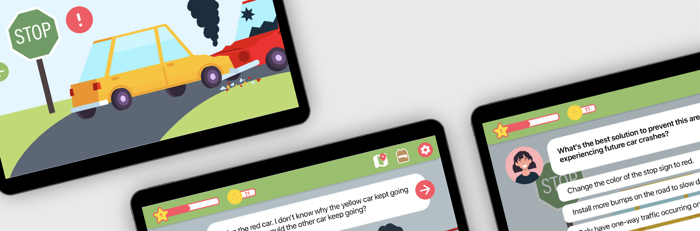
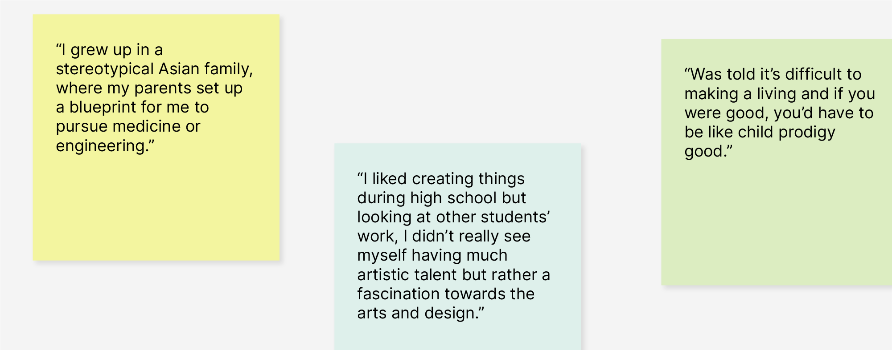
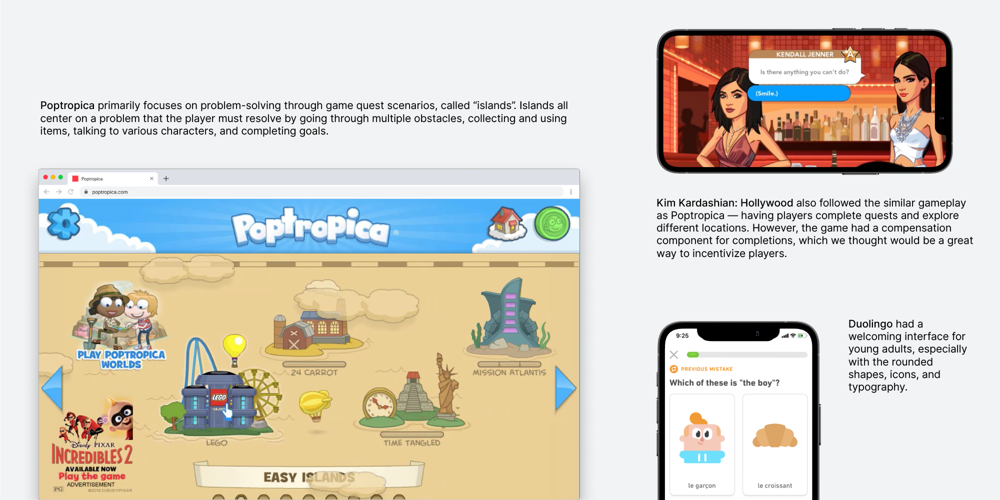
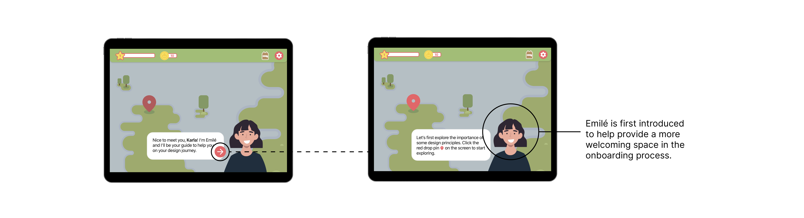
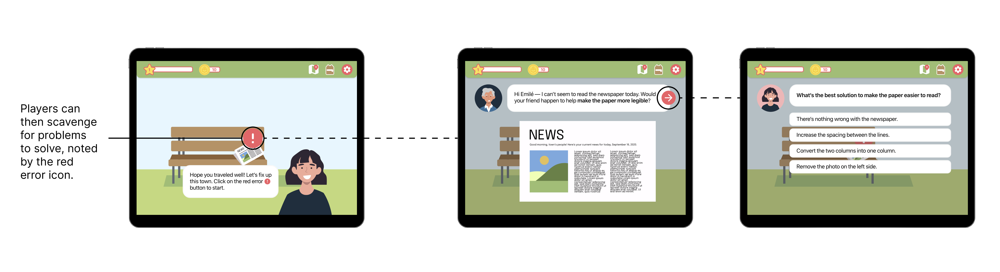
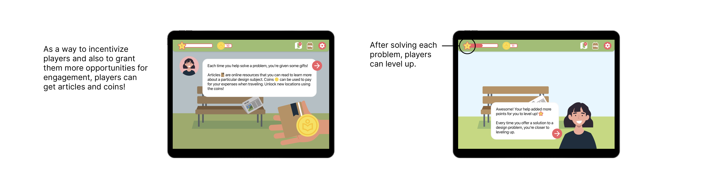
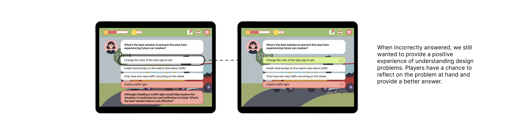
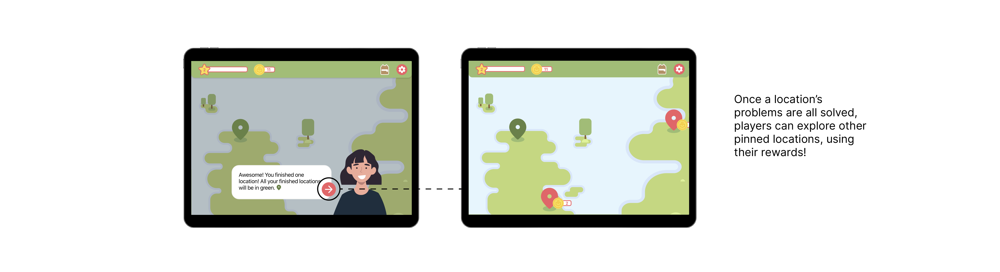

Locate
Design-a-thon hosted by Adobe and Amazon to develop a tablet app, geared towards young adults to discover design. My sister, Jay, and I developed Locate to help students locate problems and offer design solutions.Role
Product Designer
Team
Jay Nguyen, Presenter
Tools
Adobe IllustratorAdobe XD
Timeline
12 hours, Aug

Project Overview
The Problem
How can we introduce design to people who consider themselves 'non-designers'?
The Solution
Locate — an app to help young minds develop a growth mindset when it comes to design thinking and offer them insight in ways that design can be impactful for one's community.
01 Identifying the Problem
How can we introduce design to people who consider themselves 'non-designers'?
There's been Medium articles, panels, workshops, and design communities offering insight on finding your ‘inner designer’ and how to navigate within the career space. However, when looking at the listening audience, there's one large group missing — people who have or have not considered design due to a past misconception.
When interviewing current students, many have stated that growing up, there’s been a huge discouragement to pursue a career within the design space — with a preconceived notion that “it’s hard to make a living”. Young minds are then geared into fields such as science, math, and business which are deemed "successful".
There was also a group of individuals who’ve perceived themselves as ‘non-designers’ due to their “lack of visual creativity”.
When interviewing current students, many have stated that growing up, there’s been a huge discouragement to pursue a career within the design space — with a preconceived notion that “it’s hard to make a living”. Young minds are then geared into fields such as science, math, and business which are deemed "successful".
There was also a group of individuals who’ve perceived themselves as ‘non-designers’ due to their “lack of visual creativity”.

02 Ideation
Solution: Introduce the impact of design by gamifying the learning and strategic thinking behind design.
We looked at current games and learning applications geared towards young adults — ages 11 to 15. Looking at these types of user experiences, we leaned more towards an interactive map for players to solve problems in their local communities.
Not only did this provide a non-aggressive and more engaging way in educating, but also enabled a sense of value and need that design has.
Not only did this provide a non-aggressive and more engaging way in educating, but also enabled a sense of value and need that design has.

03 Final Deliverables
Have a friend along the way to guide you.

Solve community problems.

Compensate players for their help.

Offer players a chance to step back and learn.

Continue exploring.

Learnings and Takeaways
This experience was rewarding, especially since the last time I participated in Adobe Jam, my team placed last. In refiguring how I go forward with a product, I learned to go towards simple rather than complex, especially when inviting casual or beginning players.
These culminating efforts within a 12 hour time time constraint has given me a new perspective on how design is perceived, especially from those who initially consider themselves “non-designers”.
These culminating efforts within a 12 hour time time constraint has given me a new perspective on how design is perceived, especially from those who initially consider themselves “non-designers”.
Next Steps
Base different locations based on various spaces within design.
In the MVP, we only provided simple principles such as color and space; however, we would love to enable young minds to explore other spaces within design offered.
Expand more mental models to further deepen understanding.
We’ve provided mental models to explore more of with the backpack articles, but would love to embed more complexity and deepened information in particular design topics.
In the MVP, we only provided simple principles such as color and space; however, we would love to enable young minds to explore other spaces within design offered.
Expand more mental models to further deepen understanding.
We’ve provided mental models to explore more of with the backpack articles, but would love to embed more complexity and deepened information in particular design topics.